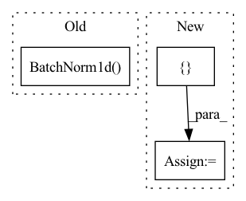

Pattern ID :2036

Before Change
block += batch_norm * [nn.BatchNorm1d(output_size)] + [activation]
block += [spectral_norm(nn.Linear(input_size, output_size)) if spect_norm else
nn.Linear(input_size, output_size)]
block += batch_norm * [nn.BatchNorm1d(output_size)]
self.shortcut = nn.Sequential(*shortcut)
self.block = nn.Sequential(*block)
After Change
block = [spectral_norm(nn.Linear(input_size, output_size)) if spect_norm else
nn.Linear(input_size, output_size)]
if norm:
block += [norm(output_size)]
block += [activation]
block += [spectral_norm(nn.Linear(output_size, output_size)) if spect_norm else
In pattern: SUPERPATTERN
Frequency: 4
Non-data size: 3
Instances
Fragment ID: 6406016
Project Name: lliutianc/gan-flow
Commit Name: 557b24a34e52ec01ad8d8e2c2b4a130f22762327
Time: 2020-06-01
Author: lliuitanc@gmail.com
File Name: residualblock.py
M Class Name: ResidualBlock
N Class Name: ResidualBlock
M Method Name: __init__(6)
N Method Name: __init__(6)
M Parent Class: nn.Module
N Parent Class: nn.Module
M File Name: residualblock.py
N File Name: residualblock.py
M Start Line: 12
M End Line: 21
N Start Line: 12
N End Line: 28
'>
Before Change
self.fc2 = nn.Linear(256, 256)
if use_batch_norm:
self.bn1 = nn.BatchNorm1d(256)
self.bn2 = nn.BatchNorm1d(256)
def forward(self, x):
h = torch.relu(self.fc1(x))
After Change
super().__init__()
if hidden_units is None:
hidden_units = [256, 256]
self.use_batch_norm = use_batch_norm
self.feature_size = hidden_units[-1]
'>
Fragment ID: 6406007
Project Name: takuseno/d3rlpy
Commit Name: 557b11a8d5cf75edfc0a2928399d5192d1757ddb
Time: 2020-06-16
Author: takuma.seno@gmail.com
File Name: skbrl/models/torch/heads.py
M Class Name: VectorHead
N Class Name: VectorHead
M Method Name: __init__(4)
N Method Name: __init__(3)
M Parent Class: nn.Module
N Parent Class: nn.Module
M File Name: skbrl/models/torch/heads.py
N File Name: skbrl/models/torch/heads.py
M Start Line: 84
M End Line: 91
N Start Line: 96
N End Line: 114
'>
Before Change
kernel_size=hparams.encoder_kernel_size, stride=1,
padding=int((hparams.encoder_kernel_size - 1) / 2),
dilation=1, w_init_gain="relu"),
nn.BatchNorm1d(hparams.encoder_embedding_dim))
convolutions.append(conv_layer)
self.convolutions = nn.ModuleList(convolutions)
After Change
// convolution layers followed by batch normalization and ReLU activation
activations = [nn.ReLU()] * num_convs
conv_out_channels = [conv_channels] * num_convs
self.conv1ds = BatchNormConv1dStack(embed_dim, conv_out_channels, kernel_size=conv_kernel_size,
stride=1, padding=(conv_kernel_size -1) // 2,
activations=activations, dropout=conv_dropout)
'>
Fragment ID: 6406022
Project Name: thuhcsi/tacotron
Commit Name: 4c1680d50b9c91bf13e13c823df949895a3c77c6
Time: 2021-03-17
Author: johnson.tsing@gmail.com
File Name: model/tacotron2.py
M Class Name: Encoder
N Class Name: Encoder
M Method Name: __init__(7)
N Method Name: __init__(2)
M Parent Class: nn.Module
N Parent Class: nn.Module
M File Name: model/tacotron2.py
N File Name: model/tacotron2.py
M Start Line: 190
M End Line: 206
N Start Line: 40
N End Line: 53
'>
Before Change
kernel_size=hparams.postnet_kernel_size, stride=1,
padding=int((hparams.postnet_kernel_size - 1) / 2),
dilation=1, w_init_gain="tanh"),
nn.BatchNorm1d(hparams.postnet_embedding_dim))
)
for i in range(1, hparams.postnet_n_convolutions - 1):
After Change
super(Postnet, self).__init__()
activations = [torch.tanh] * (num_convs - 1) + [None]
conv_channels = [conv_channels] * (num_convs - 1) + [mel_dim]
self.conv1ds = BatchNormConv1dStack(mel_dim, conv_channels, kernel_size=conv_kernel_size,
stride=1, padding=(conv_kernel_size -1) // 2,
activations=activations, dropout=conv_dropout)
'>
Fragment ID: 6405995
Project Name: thuhcsi/tacotron
Commit Name: 4c1680d50b9c91bf13e13c823df949895a3c77c6
Time: 2021-03-17
Author: johnson.tsing@gmail.com
File Name: model/tacotron2.py
M Class Name: Postnet
N Class Name: Postnet
M Method Name: __init__(6)
N Method Name: __init__(2)
M Parent Class: nn.Module
N Parent Class: nn.Module
M File Name: model/tacotron2.py
N File Name: model/tacotron2.py
M Start Line: 144
M End Line: 175
N Start Line: 19
N End Line: 26